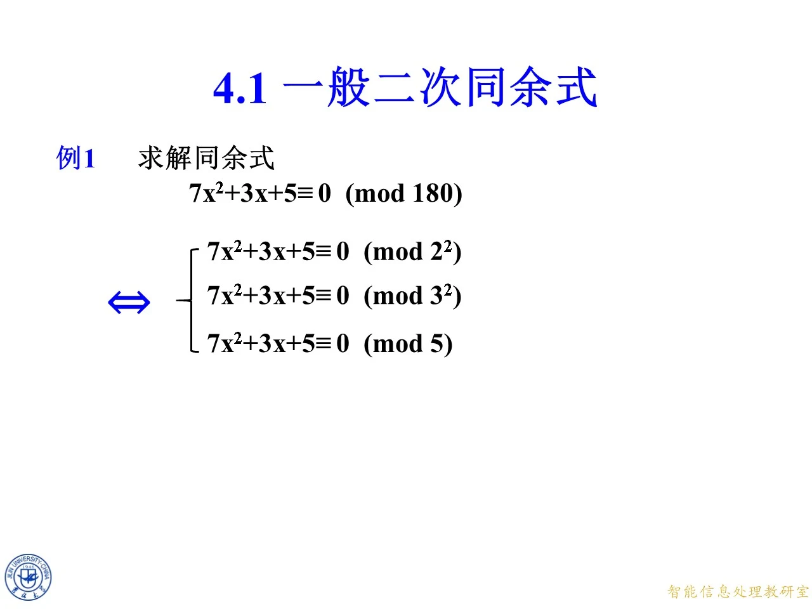
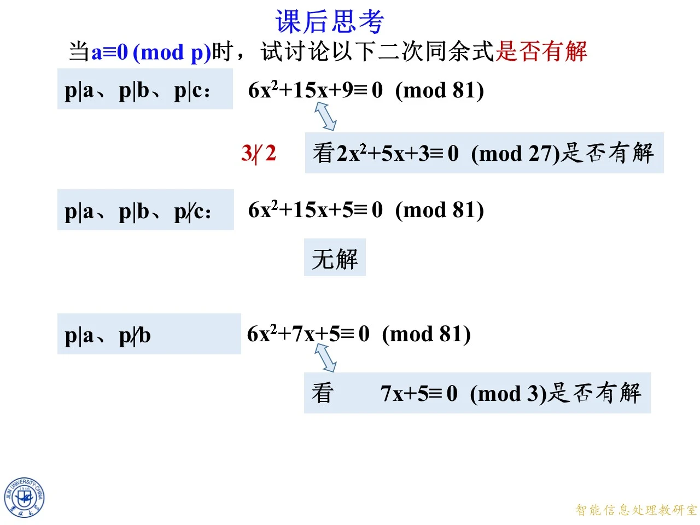
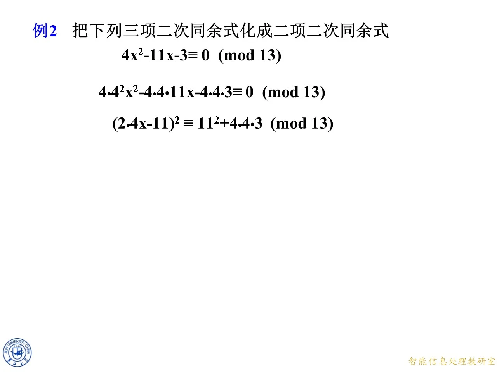

这一节是第四章的入口 4.1 节，要解决的是最一般的形式：二次同余式究竟有没有解、怎么解。手法其实只有一条主线，把模拆成素数幂，再把每个素数幂上的二次式配成完全平方，于是二次问题被拆成两件已经会做的事——开平方，以及解一次同余式。后面 4.2 到 4.5 的平方剩余、勒让得符号、二次互反律、雅可比符号，回答的都是配方后那个开平方到底成不成立；4.6 则回答成立时一共有几个解。所以这一节是整章的骨架，配方的每一步都要能自己重推一遍。
例 1：模 180 180 180
◆ p.4-5 ｜例 1 求解 7 x 2 + 3 x + 5 ≡ 0 ( m o d 180 ) 7x^{2}+3x+5\equiv0\pmod{180} 7 x 2 + 3 x + 5 ≡ 0 ( mod 180 )
课件开章第一件事不是配方，而是拆模。180 = 2 2 ⋅ 3 2 ⋅ 5 180=2^{2}\cdot 3^{2}\cdot 5 180 = 2 2 ⋅ 3 2 ⋅ 5
7 x 2 + 3 x + 5 ≡ 0 ( m o d 180 ) ⟺ { 7 x 2 + 3 x + 5 ≡ 0 ( m o d 2 2 ) , 7 x 2 + 3 x + 5 ≡ 0 ( m o d 3 2 ) , 7 x 2 + 3 x + 5 ≡ 0 ( m o d 5 ) . 7x^{2}+3x+5\equiv0\pmod{180}\ \Longleftrightarrow\ \begin{cases}7x^{2}+3x+5\equiv0\pmod{2^{2}},\\ 7x^{2}+3x+5\equiv0\pmod{3^{2}},\\ 7x^{2}+3x+5\equiv0\pmod{5}.\end{cases} 7 x 2 + 3 x + 5 ≡ 0 ( mod 180 ) ⟺ ⎩ ⎨ ⎧ 7 x 2 + 3 x + 5 ≡ 0 ( mod 2 2 ) , 7 x 2 + 3 x + 5 ≡ 0 ( mod 3 2 ) , 7 x 2 + 3 x + 5 ≡ 0 ( mod 5 ) .
箭头是双向的（课件画的是粗体双箭头 ⇔ \Leftrightarrow ⇔ 4 , 9 , 5 4,9,5 4 , 9 , 5 180 180 180
拆模的实用价值在于：任一分支无解，整体立刻无解，而最便宜的分支往往最先判死。这题正是如此。
第 2 2 2^{2} 2 2 。模 4 4 4
7 x 2 + 3 x + 5 ≡ 3 x 2 + 3 x + 1 ( m o d 4 ) . 7x^{2}+3x+5\equiv 3x^{2}+3x+1\pmod 4. 7 x 2 + 3 x + 5 ≡ 3 x 2 + 3 x + 1 ( mod 4 ) .
把 x = 0 , 1 , 2 , 3 x=0,1,2,3 x = 0 , 1 , 2 , 3 x = 0 x=0 x = 0 1 1 1 x = 1 x=1 x = 1 3 + 3 + 1 = 7 ≡ 3 3+3+1=7\equiv3 3 + 3 + 1 = 7 ≡ 3 x = 2 x=2 x = 2 3 ⋅ 4 + 6 + 1 = 19 ≡ 3 3\cdot 4+6+1=19\equiv3 3 ⋅ 4 + 6 + 1 = 19 ≡ 3 x = 3 x=3 x = 3 3 ⋅ 9 + 9 + 1 = 37 ≡ 1 3\cdot 9+9+1=37\equiv1 3 ⋅ 9 + 9 + 1 = 37 ≡ 1 1 , 3 , 3 , 1 1,3,3,1 1 , 3 , 3 , 1 0 0 0 4 4 4
还有一个更省事的看法：7 x 2 + 3 x + 5 7x^{2}+3x+5 7 x 2 + 3 x + 5 x x x 5 5 5 x x x 7 x 2 7x^{2} 7 x 2 3 x 3x 3 x 4 4 4
拓展 （课件外补充）：所以例 1 的完整答案是“无解”。课件在 p.41 又回到这题，拿第二个分支模 3 2 3^{2} 3 2 7 x 2 + 3 x + 5 ≡ 0 ( m o d 9 ) 7x^{2}+3x+5\equiv0\pmod 9 7 x 2 + 3 x + 5 ≡ 0 ( mod 9 ) x ≡ 7 , 8 x\equiv7,8 x ≡ 7 , 8 5 5 5 x ≡ 0 , 1 x\equiv0,1 x ≡ 0 , 1 4 4 4

课件原图 · 10月12日授课 · 第 5 页 查看前后已收录原页 → 一般形式与素数幂归约
◆ p.6-11 ｜(4.1)、(4.2) 与“只需讨论素数幂模”
课件给出二次同余式的一般形式
a x 2 + b x + c ≡ 0 ( m o d m ) , a ≢ 0 ( m o d m ) (4.1) ax^{2}+bx+c\equiv0\pmod m,\qquad a\not\equiv0\pmod m \tag{4.1} a x 2 + b x + c ≡ 0 ( mod m ) , a ≡ 0 ( mod m ) ( 4.1 )
注意条件写的是 a ≢ 0 ( m o d m ) a\not\equiv0\pmod m a ≡ 0 ( mod m ) ( a , m ) = 1 (a,m)=1 ( a , m ) = 1 m m m a a a
设 m = p 1 α 1 p 2 α 2 ⋯ p k α k m=p_{1}^{\alpha_{1}}p_{2}^{\alpha_{2}}\cdots p_{k}^{\alpha_{k}} m = p 1 α 1 p 2 α 2 ⋯ p k α k
a x 2 + b x + c ≡ 0 ( m o d p 1 α 1 ) , … , a x 2 + b x + c ≡ 0 ( m o d p k α k ) ax^{2}+bx+c\equiv0\pmod{p_{1}^{\alpha_{1}}},\ \ldots,\ ax^{2}+bx+c\equiv0\pmod{p_{k}^{\alpha_{k}}} a x 2 + b x + c ≡ 0 ( mod p 1 α 1 ) , … , a x 2 + b x + c ≡ 0 ( mod p k α k )
这组同余式同时有解。这一步与上一课分解 2 2 2 m m m
由此课件得出结论：只需讨论素数幂模的同余式
a x 2 + b x + c ≡ 0 ( m o d p α ) , a ≢ 0 ( m o d p ) (4.2) ax^{2}+bx+c\equiv0\pmod{p^{\alpha}},\qquad a\not\equiv0\pmod p \tag{4.2} a x 2 + b x + c ≡ 0 ( mod p α ) , a ≡ 0 ( mod p ) ( 4.2 )
其中红色的 a ≢ 0 ( m o d p ) a\not\equiv0\pmod p a ≡ 0 ( mod p ) a a a p p p 4 a 4a 4 a p α p^{\alpha} p α p p p
页面右下角弹出课后思考框：“如果 a ≡ 0 ( m o d p ) a\equiv0\pmod p a ≡ 0 ( mod p )
拓展 （课件外补充）：当 p ∣ a p\mid a p ∣ a p p p b x + c ≡ 0 ( m o d p ) bx+c\equiv0\pmod p b x + c ≡ 0 ( mod p ) b b b c c c p p p a ≢ 0 ( m o d p ) a\not\equiv0\pmod p a ≡ 0 ( mod p ) p p p

课件原图 · 10月12日授课 · 第 24 页 查看前后已收录原页 → 课后思考：a ≡ 0 ( m o d p ) a\equiv0\pmod p a ≡ 0 ( mod p )
◆ p.12-24 ｜三种情形与课件给出的结论
课件用三行把 a ≡ 0 ( m o d p ) a\equiv0\pmod p a ≡ 0 ( mod p ) p = 3 p=3 p = 3 m = 81 = 3 4 m=81=3^{4} m = 81 = 3 4
p ∣ a p\mid a p ∣ a p ∣ b p\mid b p ∣ b p ∣ c p\mid c p ∣ c 6 x 2 + 15 x + 9 ≡ 0 ( m o d 81 ) 6x^{2}+15x+9\equiv0\pmod{81} 6 x 2 + 15 x + 9 ≡ 0 ( mod 81 ) 3 3 3 3 3 3 81 81 81 27 27 27 2 x 2 + 5 x + 3 ≡ 0 ( m o d 27 ) 2x^{2}+5x+3\equiv0\pmod{27} 2 x 2 + 5 x + 3 ≡ 0 ( mod 27 ) 2 2 2 3 3 3 3 ∤ 2 3\nmid 2 3 ∤ 2 p ∣ a p\mid a p ∣ a p ∣ b p\mid b p ∣ b p ∤ c p\nmid c p ∤ c 6 x 2 + 15 x + 5 ≡ 0 ( m o d 81 ) 6x^{2}+15x+5\equiv0\pmod{81} 6 x 2 + 15 x + 5 ≡ 0 ( mod 81 ) p ∣ a p\mid a p ∣ a p ∤ b p\nmid b p ∤ b 6 x 2 + 7 x + 5 ≡ 0 ( m o d 81 ) 6x^{2}+7x+5\equiv0\pmod{81} 6 x 2 + 7 x + 5 ≡ 0 ( mod 81 ) 7 x + 5 ≡ 0 ( m o d 3 ) 7x+5\equiv0\pmod 3 7 x + 5 ≡ 0 ( mod 3 )
这三行已经穷尽了 p ∣ a p\mid a p ∣ a p p p b b b p ∣ b p\mid b p ∣ b p p p c c c p ∤ b p\nmid b p ∤ b
情形一：6 x 2 + 15 x + 9 ≡ 0 ( m o d 81 ) 6x^{2}+15x+9\equiv0\pmod{81} 6 x 2 + 15 x + 9 ≡ 0 ( mod 81 )
三个系数同被 3 3 3 3 ( 2 x 2 + 5 x + 3 ) ≡ 0 ( m o d 81 ) 3(2x^{2}+5x+3)\equiv0\pmod{81} 3 ( 2 x 2 + 5 x + 3 ) ≡ 0 ( mod 81 ) 81 ∣ 3 g ⟺ 27 ∣ g 81\mid 3g\Longleftrightarrow 27\mid g 81 ∣ 3 g ⟺ 27 ∣ g
2 x 2 + 5 x + 3 ≡ 0 ( m o d 27 ) . 2x^{2}+5x+3\equiv0\pmod{27}. 2 x 2 + 5 x + 3 ≡ 0 ( mod 27 ) .
因式分解：2 x 2 + 5 x + 3 = ( 2 x + 3 ) ( x + 1 ) 2x^{2}+5x+3=(2x+3)(x+1) 2 x 2 + 5 x + 3 = ( 2 x + 3 ) ( x + 1 ) ( 2 x + 3 ) − 2 ( x + 1 ) = 1 (2x+3)-2(x+1)=1 ( 2 x + 3 ) − 2 ( x + 1 ) = 1 1 1 1 27 ∣ ( 2 x + 3 ) ( x + 1 ) 27\mid(2x+3)(x+1) 27 ∣ ( 2 x + 3 ) ( x + 1 ) 27 27 27 3 3 3
2 x + 3 ≡ 0 ( m o d 27 ) ⇒ 2 x ≡ − 3 ≡ 24 ⇒ x ≡ 12 , 2x+3\equiv0\pmod{27}\ \Rightarrow\ 2x\equiv-3\equiv24\ \Rightarrow\ x\equiv12, 2 x + 3 ≡ 0 ( mod 27 ) ⇒ 2 x ≡ − 3 ≡ 24 ⇒ x ≡ 12 ,
x + 1 ≡ 0 ( m o d 27 ) ⇒ x ≡ 26. x+1\equiv0\pmod{27}\ \Rightarrow\ x\equiv26. x + 1 ≡ 0 ( mod 27 ) ⇒ x ≡ 26.
模 27 27 27 12 12 12 26 26 26
再回到模 81 81 81 81 81 81 27 27 27 3 3 3 81 81 81 27 27 27 3 3 3
12 , 12 + 27 = 39 , 12 + 54 = 66 ; 26 , 26 + 27 = 53 , 26 + 54 = 80. 12,\ 12+27=39,\ 12+54=66;\qquad 26,\ 26+27=53,\ 26+54=80. 12 , 12 + 27 = 39 , 12 + 54 = 66 ; 26 , 26 + 27 = 53 , 26 + 54 = 80.
共 6 6 6 x ≡ 12 , 26 , 39 , 53 , 66 , 80 ( m o d 81 ) x\equiv12,26,39,53,66,80\pmod{81} x ≡ 12 , 26 , 39 , 53 , 66 , 80 ( mod 81 ) 6 ⋅ 12 2 + 15 ⋅ 12 + 9 = 864 + 180 + 9 = 1053 = 13 ⋅ 81 6\cdot12^{2}+15\cdot12+9=864+180+9=1053=13\cdot81 6 ⋅ 1 2 2 + 15 ⋅ 12 + 9 = 864 + 180 + 9 = 1053 = 13 ⋅ 81 6 ⋅ 39 2 + 15 ⋅ 39 + 9 = 9126 + 585 + 9 = 9720 = 120 ⋅ 81 6\cdot39^{2}+15\cdot39+9=9126+585+9=9720=120\cdot81 6 ⋅ 3 9 2 + 15 ⋅ 39 + 9 = 9126 + 585 + 9 = 9720 = 120 ⋅ 81
拓展 （课件外补充）：这里“每个类分裂成 3 3 3 81 81 81 27 27 27 3 3 3 27 27 27 2 2 2 81 81 81 6 6 6
情形二：6 x 2 + 15 x + 5 ≡ 0 ( m o d 81 ) 6x^{2}+15x+5\equiv0\pmod{81} 6 x 2 + 15 x + 5 ≡ 0 ( mod 81 )
只要看模 3 3 3 6 x 2 ≡ 0 6x^{2}\equiv0 6 x 2 ≡ 0 15 x ≡ 0 15x\equiv0 15 x ≡ 0 5 ≡ 2 ( m o d 3 ) 5\equiv2\pmod 3 5 ≡ 2 ( mod 3 ) 2 ≢ 0 2\not\equiv0 2 ≡ 0 x x x 81 81 81 3 3 3 3 3 3 81 81 81
情形三：6 x 2 + 7 x + 5 ≡ 0 ( m o d 81 ) 6x^{2}+7x+5\equiv0\pmod{81} 6 x 2 + 7 x + 5 ≡ 0 ( mod 81 ) 64 64 64
第一步看模 3 3 3 0 + x + 2 ≡ 0 ( m o d 3 ) 0+x+2\equiv0\pmod 3 0 + x + 2 ≡ 0 ( mod 3 ) x ≡ 1 ( m o d 3 ) x\equiv1\pmod 3 x ≡ 1 ( mod 3 )
此后每一步都只是线性方程。记 f ( x ) = 6 x 2 + 7 x + 5 f(x)=6x^{2}+7x+5 f ( x ) = 6 x 2 + 7 x + 5 f ′ ( x ) = 12 x + 7 f'(x)=12x+7 f ′ ( x ) = 12 x + 7 x = 1 x=1 x = 1 f ′ ( 1 ) = 19 ≡ 1 ( m o d 3 ) f'(1)=19\equiv1\pmod 3 f ′ ( 1 ) = 19 ≡ 1 ( mod 3 ) 3 3 3
模 9 9 9 f ( 1 ) = 6 + 7 + 5 = 18 = 2 ⋅ 9 f(1)=6+7+5=18=2\cdot 9 f ( 1 ) = 6 + 7 + 5 = 18 = 2 ⋅ 9 x ≡ 1 ( m o d 9 ) x\equiv1\pmod 9 x ≡ 1 ( mod 9 )
模 27 27 27 x = 1 + 3 t x=1+3t x = 1 + 3 t f ( 1 + 3 t ) ≡ f ( 1 ) + 3 t f ′ ( 1 ) ( m o d 27 ) f(1+3t)\equiv f(1)+3t\,f'(1)\pmod{27} f ( 1 + 3 t ) ≡ f ( 1 ) + 3 t f ′ ( 1 ) ( mod 27 ) t 2 t^{2} t 2 9 t 2 ⋅ 6 = 54 t 2 9t^{2}\cdot 6=54t^{2} 9 t 2 ⋅ 6 = 54 t 2 27 27 27 18 + 57 t ≡ 18 + 3 t ≡ 0 ( m o d 27 ) 18+57t\equiv18+3t\equiv0\pmod{27} 18 + 57 t ≡ 18 + 3 t ≡ 0 ( mod 27 ) 3 t ≡ − 18 ≡ 9 ( m o d 27 ) 3t\equiv-18\equiv9\pmod{27} 3 t ≡ − 18 ≡ 9 ( mod 27 ) t ≡ 3 ( m o d 9 ) t\equiv3\pmod 9 t ≡ 3 ( mod 9 ) x ≡ 1 + 9 = 10 ( m o d 27 ) x\equiv1+9=10\pmod{27} x ≡ 1 + 9 = 10 ( mod 27 ) f ( 10 ) = 600 + 70 + 5 = 675 = 25 ⋅ 27 f(10)=600+70+5=675=25\cdot27 f ( 10 ) = 600 + 70 + 5 = 675 = 25 ⋅ 27
模 81 81 81 x = 10 + 27 t x=10+27t x = 10 + 27 t f ( 10 ) = 675 = 25 ⋅ 27 f(10)=675=25\cdot27 f ( 10 ) = 675 = 25 ⋅ 27 f ′ ( 10 ) = 127 f'(10)=127 f ′ ( 10 ) = 127 675 + 27 ⋅ 127 t ≡ 0 ( m o d 81 ) 675+27\cdot127t\equiv0\pmod{81} 675 + 27 ⋅ 127 t ≡ 0 ( mod 81 ) 27 27 27 25 + 127 t ≡ 0 ( m o d 3 ) 25+127t\equiv0\pmod 3 25 + 127 t ≡ 0 ( mod 3 ) 25 ≡ 1 25\equiv1 25 ≡ 1 127 ≡ 1 127\equiv1 127 ≡ 1 1 + t ≡ 0 1+t\equiv0 1 + t ≡ 0 t ≡ 2 ( m o d 3 ) t\equiv2\pmod 3 t ≡ 2 ( mod 3 ) x ≡ 10 + 54 = 64 ( m o d 81 ) x\equiv10+54=64\pmod{81} x ≡ 10 + 54 = 64 ( mod 81 ) f ( 64 ) = 24576 + 448 + 5 = 25029 = 309 ⋅ 81 f(64)=24576+448+5=25029=309\cdot81 f ( 64 ) = 24576 + 448 + 5 = 25029 = 309 ⋅ 81
所以在模 81 81 81 x ≡ 64 x\equiv64 x ≡ 64
拓展 （课件外补充）：这就是课件红字“整个求解过程都只与一次同余式有关”的确切含义——在模 p p p x = r + p k t x=r+p^{k}t x = r + p k t t t t f ′ ( 1 ) ≢ 0 ( m o d 3 ) f'(1)\not\equiv0\pmod 3 f ′ ( 1 ) ≡ 0 ( mod 3 )
模 2 2 2
◆ p.25-26 ｜(4.2) 在 p = 2 p=2 p = 2
课件把 (4.2) 单独取 p = 2 p=2 p = 2 p = 2 p=2 p = 2 4 a 4a 4 a p = 2 p=2 p = 2
理由很直接：p = 2 p=2 p = 2 a a a 4 a 4a 4 a ( p α , 4 a ) = ( 2 α , 4 a ) = 4 ≠ 1 (p^{\alpha},4a)=(2^{\alpha},4a)=4\ne1 ( p α , 4 a ) = ( 2 α , 4 a ) = 4 = 1 4 a 4a 4 a 2 α 2^{\alpha} 2 α 4 a 4a 4 a y y y x x x a , b , c a,b,c a , b , c
◆ p.27-35 ｜三个模 256 256 256 2 2 2 y 2 ≡ A y^{2}\equiv A y 2 ≡ A
三行分别对应 2 ∤ a 2\nmid a 2 ∤ a b , c b,c b , c
2 ∤ a 2\nmid a 2 ∤ a 2 ∤ b 2\nmid b 2 ∤ b 2 ∤ c 2\nmid c 2 ∤ c 7 x 2 + 7 x + 5 ≡ 0 ( m o d 256 ) 7x^{2}+7x+5\equiv0\pmod{256} 7 x 2 + 7 x + 5 ≡ 0 ( mod 256 ) 2 ∤ a 2\nmid a 2 ∤ a 2 ∤ b 2\nmid b 2 ∤ b 2 ∣ c 2\mid c 2 ∣ c 7 x 2 + 7 x + 6 ≡ 0 ( m o d 256 ) 7x^{2}+7x+6\equiv0\pmod{256} 7 x 2 + 7 x + 6 ≡ 0 ( mod 256 ) 7 x 2 + 7 x + 6 ≡ 0 ( m o d 2 ) 7x^{2}+7x+6\equiv0\pmod 2 7 x 2 + 7 x + 6 ≡ 0 ( mod 2 ) 2 ∤ a 2\nmid a 2 ∤ a 2 ∣ b 2\mid b 2 ∣ b 7 x 2 + 8 x + 6 ≡ 0 ( m o d 256 ) 7x^{2}+8x+6\equiv0\pmod{256} 7 x 2 + 8 x + 6 ≡ 0 ( mod 256 ) a = 7 a=7 a = 7 ( 7 x + 4 ) 2 + 6 ⋅ 7 − 4 2 ≡ 0 ( m o d 256 ) (7x+4)^{2}+6\cdot7-4^{2}\equiv0\pmod{256} ( 7 x + 4 ) 2 + 6 ⋅ 7 − 4 2 ≡ 0 ( mod 256 ) y 2 ≡ A ( m o d 256 ) y^{2}\equiv A\pmod{256} y 2 ≡ A ( mod 256 )
课件只给到这一步，下面把三道题算完。
第一题：7 x 2 + 7 x + 5 ≡ 0 ( m o d 256 ) 7x^{2}+7x+5\equiv0\pmod{256} 7 x 2 + 7 x + 5 ≡ 0 ( mod 256 )
把左端写成 7 x ( x + 1 ) + 5 7x(x+1)+5 7 x ( x + 1 ) + 5 x ( x + 1 ) x(x+1) x ( x + 1 ) 7 x ( x + 1 ) 7x(x+1) 7 x ( x + 1 ) 5 5 5 ≡ 0 ( m o d 2 ) \equiv0\pmod 2 ≡ 0 ( mod 2 ) ≡ 0 ( m o d 256 ) \equiv0\pmod{256} ≡ 0 ( mod 256 )
第二题：7 x 2 + 7 x + 6 ≡ 0 ( m o d 256 ) 7x^{2}+7x+6\equiv0\pmod{256} 7 x 2 + 7 x + 6 ≡ 0 ( mod 256 ) 13 13 13 242 242 242
记 f ( x ) = 7 x 2 + 7 x + 6 f(x)=7x^{2}+7x+6 f ( x ) = 7 x 2 + 7 x + 6
模 2 2 2 f ( x ) ≡ x 2 + x ≡ x ( x + 1 ) ≡ 0 f(x)\equiv x^{2}+x\equiv x(x+1)\equiv0 f ( x ) ≡ x 2 + x ≡ x ( x + 1 ) ≡ 0 x ≡ 0 x\equiv0 x ≡ 0 x ≡ 1 x\equiv1 x ≡ 1 2 2 2
导数 f ′ ( x ) = 14 x + 7 f'(x)=14x+7 f ′ ( x ) = 14 x + 7 2 2 2 1 1 1 256 256 256 2 2 2
拓展 （课件外补充）：提升的公式与逐层结果。已知 r r r 2 k 2^{k} 2 k x = r + 2 k t x=r+2^{k}t x = r + 2 k t t = 0 , 1 t=0,1 t = 0 , 1
f ( r + 2 k t ) ≡ f ( r ) + 2 k t f ′ ( r ) ( m o d 2 k + 1 ) . f(r+2^{k}t)\equiv f(r)+2^{k}t\,f'(r)\pmod{2^{k+1}}. f ( r + 2 k t ) ≡ f ( r ) + 2 k t f ′ ( r ) ( mod 2 k + 1 ) .
因为 2 k ∣ f ( r ) 2^{k}\mid f(r) 2 k ∣ f ( r ) f ′ ( r ) f'(r) f ′ ( r ) 2 2 2 1 1 1
t ≡ − f ( r ) 2 k ( m o d 2 ) , t\equiv-\frac{f(r)}{2^{k}}\pmod 2, t ≡ − 2 k f ( r ) ( mod 2 ) ,
即“商为奇数就取 t = 1 t=1 t = 1 t = 0 t=0 t = 0 r r r
模
全部解
2 2 2 0 , 1 0,\ 1 0 , 1
4 4 4 1 , 2 1,\ 2 1 , 2
8 8 8 2 , 5 2,\ 5 2 , 5
16 16 16 2 , 13 2,\ 13 2 , 13
32 32 32 13 , 18 13,\ 18 13 , 18
64 64 64 13 , 50 13,\ 50 13 , 50
128 128 128 13 , 114 13,\ 114 13 , 114
256 256 256 13 , 242 13,\ 242 13 , 242
挑两步看：从模 4 4 4 8 8 8 r = 1 r=1 r = 1 f ( 1 ) = 20 f(1)=20 f ( 1 ) = 20 20 / 4 = 5 20/4=5 20/4 = 5 t = 1 t=1 t = 1 5 5 5 r = 2 r=2 r = 2 f ( 2 ) = 48 f(2)=48 f ( 2 ) = 48 48 / 4 = 12 48/4=12 48/4 = 12 2 2 2 128 128 128 256 256 256 r = 13 r=13 r = 13 f ( 13 ) = 1280 f(13)=1280 f ( 13 ) = 1280 1280 / 128 = 10 1280/128=10 1280/128 = 10 13 13 13 r = 114 r=114 r = 114 f ( 114 ) = 91776 f(114)=91776 f ( 114 ) = 91776 91776 / 128 = 717 91776/128=717 91776/128 = 717 t = 1 t=1 t = 1 114 + 128 = 242 114+128=242 114 + 128 = 242
检验：f ( 13 ) = 1280 = 5 ⋅ 256 f(13)=1280=5\cdot256 f ( 13 ) = 1280 = 5 ⋅ 256 f ( 242 ) = 411648 = 1608 ⋅ 256 f(242)=411648=1608\cdot256 f ( 242 ) = 411648 = 1608 ⋅ 256 f ( − 1 − x ) = 7 ( 1 + 2 x + x 2 ) − 7 − 7 x + 6 = 7 x 2 + 7 x + 6 = f ( x ) f(-1-x)=7(1+2x+x^{2})-7-7x+6=7x^{2}+7x+6=f(x) f ( − 1 − x ) = 7 ( 1 + 2 x + x 2 ) − 7 − 7 x + 6 = 7 x 2 + 7 x + 6 = f ( x ) x x x − 1 − x -1-x − 1 − x − 1 − 13 = − 14 ≡ 242 ( m o d 256 ) -1-13=-14\equiv242\pmod{256} − 1 − 13 = − 14 ≡ 242 ( mod 256 )
第三题：7 x 2 + 8 x + 6 ≡ 0 ( m o d 256 ) 7x^{2}+8x+6\equiv0\pmod{256} 7 x 2 + 8 x + 6 ≡ 0 ( mod 256 )
按课件路线：7 7 7 256 256 256 7 7 7
49 x 2 + 56 x + 42 ≡ 0 ( m o d 256 ) . 49x^{2}+56x+42\equiv0\pmod{256}. 49 x 2 + 56 x + 42 ≡ 0 ( mod 256 ) .
又 ( 7 x + 4 ) 2 = 49 x 2 + 56 x + 16 (7x+4)^{2}=49x^{2}+56x+16 ( 7 x + 4 ) 2 = 49 x 2 + 56 x + 16 26 26 26
( 7 x + 4 ) 2 ≡ − 26 ≡ 230 ( m o d 256 ) . (7x+4)^{2}\equiv-26\equiv230\pmod{256}. ( 7 x + 4 ) 2 ≡ − 26 ≡ 230 ( mod 256 ) .
现在只需判 y 2 ≡ 230 ( m o d 256 ) y^{2}\equiv230\pmod{256} y 2 ≡ 230 ( mod 256 ) 4 4 4 230 ≡ 2 ( m o d 4 ) 230\equiv2\pmod 4 230 ≡ 2 ( mod 4 ) 4 4 4 0 0 0 1 1 1
也可以直接在模 4 4 4 x x x 7 x 2 ≡ 0 7x^{2}\equiv0 7 x 2 ≡ 0 8 x ≡ 0 8x\equiv0 8 x ≡ 0 6 ≡ 2 6\equiv2 6 ≡ 2 2 2 2 x x x 7 x 2 ≡ 7 ≡ 3 7x^{2}\equiv7\equiv3 7 x 2 ≡ 7 ≡ 3 8 x ≡ 0 8x\equiv0 8 x ≡ 0 6 ≡ 2 6\equiv2 6 ≡ 2 5 ≡ 1 5\equiv1 5 ≡ 1 0 0 0
拓展 （课件外补充）：为什么这题乘的是 a = 7 a=7 a = 7 4 a 4a 4 a 2 ∣ b 2\mid b 2 ∣ b b = 2 b ′ b=2b' b = 2 b ′ b = 8 b=8 b = 8 b ′ = 4 b'=4 b ′ = 4
a ⋅ ( a x 2 + b x + c ) = a 2 x 2 + a b x + a c = ( a x + b ′ ) 2 + ( a c − b ′ 2 ) , a\cdot(ax^{2}+bx+c)=a^{2}x^{2}+abx+ac=(ax+b')^{2}+(ac-b'^{2}), a ⋅ ( a x 2 + b x + c ) = a 2 x 2 + ab x + a c = ( a x + b ′ ) 2 + ( a c − b ′ 2 ) ,
于是原式等价于 ( a x + b ′ ) 2 ≡ b ′ 2 − a c (ax+b')^{2}\equiv b'^{2}-ac ( a x + b ′ ) 2 ≡ b ′ 2 − a c a = 7 , b ′ = 4 , c = 6 a=7,b'=4,c=6 a = 7 , b ′ = 4 , c = 6 = 16 − 42 = − 26 =16-42=-26 = 16 − 42 = − 26 b b b b ′ b' b ′ 2 2 2
奇素数模的配方
◆ p.36-40 ｜( p α , 4 a ) = 1 (p^{\alpha},4a)=1 ( p α , 4 a ) = 1 y 2 ≡ A ( m o d p α ) y^{2}\equiv A\pmod{p^{\alpha}} y 2 ≡ A ( mod p α )
课件把 (4.2) 的配方过程一步步搭出来。
前提：若 p p p ( p α , 4 a ) = 1 (p^{\alpha},4a)=1 ( p α , 4 a ) = 1 p α p^{\alpha} p α p p p p ∤ a p\nmid a p ∤ a p ∤ 4 a p\nmid 4a p ∤ 4 a 4 a 4a 4 a p α p^{\alpha} p α 4 a 4a 4 a
4 a 2 x 2 + 4 a b x + 4 a c ≡ 0 ( m o d p α ) . 4a^{2}x^{2}+4abx+4ac\equiv0\pmod{p^{\alpha}}. 4 a 2 x 2 + 4 ab x + 4 a c ≡ 0 ( mod p α ) .
关键恒等式是
( 2 a x + b ) 2 = 4 a 2 x 2 + 4 a b x + b 2 , (2ax+b)^{2}=4a^{2}x^{2}+4abx+b^{2}, ( 2 a x + b ) 2 = 4 a 2 x 2 + 4 ab x + b 2 ,
与上式只差常数项，于是
( 2 a x + b ) 2 ≡ b 2 − 4 a c ( m o d p α ) . (2ax+b)^{2}\equiv b^{2}-4ac\pmod{p^{\alpha}}. ( 2 a x + b ) 2 ≡ b 2 − 4 a c ( mod p α ) .
令 y = 2 a x + b y=2ax+b y = 2 a x + b A = b 2 − 4 a c A=b^{2}-4ac A = b 2 − 4 a c
y 2 ≡ A ( m o d p α ) . y^{2}\equiv A\pmod{p^{\alpha}}. y 2 ≡ A ( mod p α ) .
课件最后一句“此同余式等价于 (4.2)”。这句话的两个方向都要说清，否则“等价”就成了口号：
若 x x x y = 2 a x + b y=2ax+b y = 2 a x + b y 2 ≡ A y^{2}\equiv A y 2 ≡ A
反之若 y y y y 2 ≡ A y^{2}\equiv A y 2 ≡ A x x x 2 a x ≡ y − b ( m o d p α ) 2ax\equiv y-b\pmod{p^{\alpha}} 2 a x ≡ y − b ( mod p α ) p p p p ∤ a p\nmid a p ∤ a ( 2 a , p α ) = 1 (2a,p^{\alpha})=1 ( 2 a , p α ) = 1 2 a 2a 2 a y y y x x x
两方向的映射互为逆，于是 (4.2) 的解与 y 2 ≡ A y^{2}\equiv A y 2 ≡ A
拓展 （课件外补充）：A = b 2 − 4 a c A=b^{2}-4ac A = b 2 − 4 a c Δ \Delta Δ 4 a 4a 4 a a a a 4 a 4a 4 a
例 1 续：模 3 2 3^{2} 3 2
◆ p.41 ｜以第二个同余式为例
课件回到例 1，只取 7 x 2 + 3 x + 5 ≡ 0 ( m o d 3 2 ) 7x^{2}+3x+5\equiv0\pmod{3^{2}} 7 x 2 + 3 x + 5 ≡ 0 ( mod 3 2 ) a = 7 a=7 a = 7 b = 3 b=3 b = 3 c = 5 c=5 c = 5 4 a = 28 4a=28 4 a = 28 28 28 28
4 ⋅ 7 2 x 2 + 4 ⋅ 7 ⋅ 3 x + 4 ⋅ 7 ⋅ 5 ≡ 0 ( m o d 9 ) , 4\cdot7^{2}x^{2}+4\cdot7\cdot3x+4\cdot7\cdot5\equiv0\pmod{9}, 4 ⋅ 7 2 x 2 + 4 ⋅ 7 ⋅ 3 x + 4 ⋅ 7 ⋅ 5 ≡ 0 ( mod 9 ) ,
即 196 x 2 + 84 x + 140 ≡ 0 ( m o d 9 ) 196x^{2}+84x+140\equiv0\pmod 9 196 x 2 + 84 x + 140 ≡ 0 ( mod 9 ) ( 2 ⋅ 7 x + 3 ) 2 = ( 14 x + 3 ) 2 = 196 x 2 + 84 x + 9 (2\cdot7x+3)^{2}=(14x+3)^{2}=196x^{2}+84x+9 ( 2 ⋅ 7 x + 3 ) 2 = ( 14 x + 3 ) 2 = 196 x 2 + 84 x + 9
( 14 x + 3 ) 2 ≡ 3 2 − 4 ⋅ 7 ⋅ 5 = 9 − 140 = − 131 ≡ 4 ( m o d 9 ) . (14x+3)^{2}\equiv 3^{2}-4\cdot7\cdot5=9-140=-131\equiv4\pmod 9. ( 14 x + 3 ) 2 ≡ 3 2 − 4 ⋅ 7 ⋅ 5 = 9 − 140 = − 131 ≡ 4 ( mod 9 ) .
接着把 4 4 4 9 9 9 4 4 4 y ≡ 2 y\equiv2 y ≡ 2 y ≡ 7 y\equiv7 y ≡ 7 ± 2 \pm2 ± 2 2 2 = 4 2^{2}=4 2 2 = 4 7 2 = 49 ≡ 4 7^{2}=49\equiv4 7 2 = 49 ≡ 4 14 x + 3 ≡ 5 x + 3 ( m o d 9 ) 14x+3\equiv5x+3\pmod 9 14 x + 3 ≡ 5 x + 3 ( mod 9 )
5 x + 3 ≡ 2 5x+3\equiv2 5 x + 3 ≡ 2 5 x ≡ − 1 ≡ 8 5x\equiv-1\equiv8 5 x ≡ − 1 ≡ 8 5 − 1 ≡ 2 ( m o d 9 ) 5^{-1}\equiv2\pmod 9 5 − 1 ≡ 2 ( mod 9 ) 5 ⋅ 2 = 10 ≡ 1 5\cdot2=10\equiv1 5 ⋅ 2 = 10 ≡ 1 x ≡ 16 ≡ 7 x\equiv16\equiv7 x ≡ 16 ≡ 7 5 x + 3 ≡ 7 5x+3\equiv7 5 x + 3 ≡ 7 5 x ≡ 4 5x\equiv4 5 x ≡ 4 x ≡ 8 x\equiv8 x ≡ 8
所以模 9 9 9 x ≡ 7 , 8 x\equiv7,\ 8 x ≡ 7 , 8 7 ⋅ 49 + 21 + 5 = 369 = 41 ⋅ 9 7\cdot49+21+5=369=41\cdot9 7 ⋅ 49 + 21 + 5 = 369 = 41 ⋅ 9 7 ⋅ 64 + 24 + 5 = 477 = 53 ⋅ 9 7\cdot64+24+5=477=53\cdot9 7 ⋅ 64 + 24 + 5 = 477 = 53 ⋅ 9
拓展 （课件外补充）：顺手把第三支模 5 5 5 7 x 2 + 3 x + 5 ≡ 2 x 2 + 3 x ≡ x ( 2 x + 3 ) ( m o d 5 ) 7x^{2}+3x+5\equiv2x^{2}+3x\equiv x(2x+3)\pmod 5 7 x 2 + 3 x + 5 ≡ 2 x 2 + 3 x ≡ x ( 2 x + 3 ) ( mod 5 ) x ≡ 0 x\equiv0 x ≡ 0 x ≡ 1 x\equiv1 x ≡ 1 2 x ≡ − 3 ≡ 2 2x\equiv-3\equiv2 2 x ≡ − 3 ≡ 2 x ≡ 1 x\equiv1 x ≡ 1 9 9 9 5 5 5 4 4 4
例 2：把三项二次同余式化成二项
◆ p.42-43 ｜例 2 化 4 x 2 − 11 x − 3 ≡ 0 ( m o d 13 ) 4x^{2}-11x-3\equiv0\pmod{13} 4 x 2 − 11 x − 3 ≡ 0 ( mod 13 )
题目只要求“化成二项二次同余式”，脚手架仍是同乘 4 a 4a 4 a a = 4 a=4 a = 4 b = − 11 b=-11 b = − 11 c = − 3 c=-3 c = − 3 4 a = 16 4a=16 4 a = 16
4 ⋅ 4 2 x 2 − 4 ⋅ 4 ⋅ 11 x − 4 ⋅ 4 ⋅ 3 ≡ 0 ( m o d 13 ) , 4\cdot4^{2}x^{2}-4\cdot4\cdot11x-4\cdot4\cdot3\equiv0\pmod{13}, 4 ⋅ 4 2 x 2 − 4 ⋅ 4 ⋅ 11 x − 4 ⋅ 4 ⋅ 3 ≡ 0 ( mod 13 ) ,
即 64 x 2 − 176 x − 48 ≡ 0 64x^{2}-176x-48\equiv0 64 x 2 − 176 x − 48 ≡ 0 ( 2 ⋅ 4 x − 11 ) 2 = ( 8 x − 11 ) 2 = 64 x 2 − 176 x + 121 (2\cdot4x-11)^{2}=(8x-11)^{2}=64x^{2}-176x+121 ( 2 ⋅ 4 x − 11 ) 2 = ( 8 x − 11 ) 2 = 64 x 2 − 176 x + 121
( 2 ⋅ 4 x − 11 ) 2 ≡ 11 2 + 4 ⋅ 4 ⋅ 3 = 121 + 48 = 169 ( m o d 13 ) . (2\cdot4x-11)^{2}\equiv 11^{2}+4\cdot4\cdot3=121+48=169\pmod{13}. ( 2 ⋅ 4 x − 11 ) 2 ≡ 1 1 2 + 4 ⋅ 4 ⋅ 3 = 121 + 48 = 169 ( mod 13 ) .
拓展 （课件外补充）：课件停在“化成二项式”，这里把答案与解一并补完。169 = 13 2 ≡ 0 ( m o d 13 ) 169=13^{2}\equiv0\pmod{13} 169 = 1 3 2 ≡ 0 ( mod 13 ) A = b 2 − 4 a c = 0 A=b^{2}-4ac=0 A = b 2 − 4 a c = 0
( 8 x − 11 ) 2 ≡ 0 ( m o d 13 ) ⟹ 13 ∣ ( 8 x − 11 ) 2 ⟹ 13 ∣ 8 x − 11 , (8x-11)^{2}\equiv0\pmod{13}\ \Longrightarrow\ 13\mid(8x-11)^{2}\ \Longrightarrow\ 13\mid 8x-11, ( 8 x − 11 ) 2 ≡ 0 ( mod 13 ) ⟹ 13 ∣ ( 8 x − 11 ) 2 ⟹ 13 ∣ 8 x − 11 ,
最后一步用的是“素数整除平方就整除底数”。由 8 x ≡ 11 ( m o d 13 ) 8x\equiv11\pmod{13} 8 x ≡ 11 ( mod 13 ) 8 − 1 ≡ 5 8^{-1}\equiv5 8 − 1 ≡ 5 8 ⋅ 5 = 40 = 3 ⋅ 13 + 1 8\cdot5=40=3\cdot13+1 8 ⋅ 5 = 40 = 3 ⋅ 13 + 1
x ≡ 11 ⋅ 5 = 55 ≡ 3 ( m o d 13 ) , x\equiv11\cdot5=55\equiv3\pmod{13}, x ≡ 11 ⋅ 5 = 55 ≡ 3 ( mod 13 ) ,
只有一个解。检验：4 ⋅ 9 − 33 − 3 = 36 − 36 = 0 4\cdot9-33-3=36-36=0 4 ⋅ 9 − 33 − 3 = 36 − 36 = 0
也可因式分解核对：4 x 2 − 11 x − 3 = ( 4 x + 1 ) ( x − 3 ) 4x^{2}-11x-3=(4x+1)(x-3) 4 x 2 − 11 x − 3 = ( 4 x + 1 ) ( x − 3 ) x − 3 ≡ 0 x-3\equiv0 x − 3 ≡ 0 x ≡ 3 x\equiv3 x ≡ 3 4 x + 1 ≡ 0 4x+1\equiv0 4 x + 1 ≡ 0 4 x ≡ − 1 4x\equiv-1 4 x ≡ − 1 4 − 1 ≡ 10 4^{-1}\equiv10 4 − 1 ≡ 10 4 ⋅ 10 = 40 ≡ 1 4\cdot10=40\equiv1 4 ⋅ 10 = 40 ≡ 1 x ≡ − 10 ≡ 3 x\equiv-10\equiv3 x ≡ − 10 ≡ 3
拓展 （课件外补充）：A ≡ 0 A\equiv0 A ≡ 0 y 2 ≡ 0 ( m o d p ) y^{2}\equiv0\pmod p y 2 ≡ 0 ( mod p ) y ≡ 0 y\equiv0 y ≡ 0 x x x

课件原图 · 10月12日授课 · 第 43 页 查看前后已收录原页 → 判定流程与遗留问题
◆ p.44 ｜配方公式的复现
这一页与 p.36-40 是同一张配方页的重现，紧接在例 2 后面，作用是把“例 2 那种变形”重新挂回一般公式：不管具体系数是什么，判定 a x 2 + b x + c ≡ 0 ( m o d p α ) ax^{2}+bx+c\equiv0\pmod{p^{\alpha}} a x 2 + b x + c ≡ 0 ( mod p α ) y 2 ≡ A ( m o d p α ) y^{2}\equiv A\pmod{p^{\alpha}} y 2 ≡ A ( mod p α ) A = b 2 − 4 a c A=b^{2}-4ac A = b 2 − 4 a c y = 2 a x + b y=2ax+b y = 2 a x + b
◆ p.45-47 ｜判定链与课后思考
课件的判定链分两层。
第一层把 a x 2 + b x + c ≡ 0 ( m o d m ) ax^{2}+bx+c\equiv0\pmod m a x 2 + b x + c ≡ 0 ( mod m ) 4 a 4a 4 a y 2 ≡ A ( m o d p α ) y^{2}\equiv A\pmod{p^{\alpha}} y 2 ≡ A ( mod p α ) ( A , p α ) = 1 (A,p^{\alpha})=1 ( A , p α ) = 1 y 2 ≡ A y^{2}\equiv A y 2 ≡ A
页面上红字课后思考问：如果 ( A , p α ) > 1 (A,p^{\alpha})\gt 1 ( A , p α ) > 1
拓展 （课件外补充）：这是全节的最后一块拼图。设 p α p^{\alpha} p α p ∣ A p\mid A p ∣ A A A A A = p s A ′ A=p^{s}A' A = p s A ′ 0 < s < α 0\lt s\lt \alpha 0 < s < α p ∤ A ′ p\nmid A' p ∤ A ′ y 2 ≡ A ( m o d p α ) y^{2}\equiv A\pmod{p^{\alpha}} y 2 ≡ A ( mod p α ) p s ∣ y 2 p^{s}\mid y^{2} p s ∣ y 2 s s s p p p
若 s s s
若 s = 2 t s=2t s = 2 t y = p t z y=p^{t}z y = p t z p 2 t z 2 ≡ p 2 t A ′ ( m o d p α ) p^{2t}z^{2}\equiv p^{2t}A'\pmod{p^{\alpha}} p 2 t z 2 ≡ p 2 t A ′ ( mod p α ) p 2 t p^{2t} p 2 t
z 2 ≡ A ′ ( m o d p α − 2 t ) , z^{2}\equiv A'\pmod{p^{\alpha-2t}}, z 2 ≡ A ′ ( mod p α − 2 t ) ,
此时 ( A ′ , p ) = 1 (A',p)=1 ( A ′ , p ) = 1
三个小例子。其一，y 2 ≡ 9 ( m o d 81 ) y^{2}\equiv9\pmod{81} y 2 ≡ 9 ( mod 81 ) 9 = 3 2 9=3^{2} 9 = 3 2 s = 2 s=2 s = 2 t = 1 t=1 t = 1 α − 2 t = 2 \alpha-2t=2 α − 2 t = 2 z 2 ≡ 1 ( m o d 9 ) z^{2}\equiv1\pmod 9 z 2 ≡ 1 ( mod 9 ) z ≡ 1 , 8 ( m o d 9 ) z\equiv1,8\pmod 9 z ≡ 1 , 8 ( mod 9 ) y = 3 z y=3z y = 3 z y y y 81 81 81 z z z 27 27 27 z z z y y y z = 1 , 10 , 19 z=1,10,19 z = 1 , 10 , 19 y = 3 , 30 , 57 y=3,30,57 y = 3 , 30 , 57 z = 8 , 17 , 26 z=8,17,26 z = 8 , 17 , 26 y = 24 , 51 , 78 y=24,51,78 y = 24 , 51 , 78 6 6 6 ( A , p α ) > 1 (A,p^{\alpha})\gt 1 ( A , p α ) > 1 y 2 ≡ 18 ( m o d 81 ) y^{2}\equiv18\pmod{81} y 2 ≡ 18 ( mod 81 ) 18 = 2 ⋅ 3 2 18=2\cdot3^{2} 18 = 2 ⋅ 3 2 s = 2 s=2 s = 2 t = 1 t=1 t = 1 z 2 ≡ 2 ( m o d 9 ) z^{2}\equiv2\pmod 9 z 2 ≡ 2 ( mod 9 ) 3 3 3 1 1 1 y 2 ≡ 3 ( m o d 27 ) y^{2}\equiv3\pmod{27} y 2 ≡ 3 ( mod 27 ) s = 1 s=1 s = 1